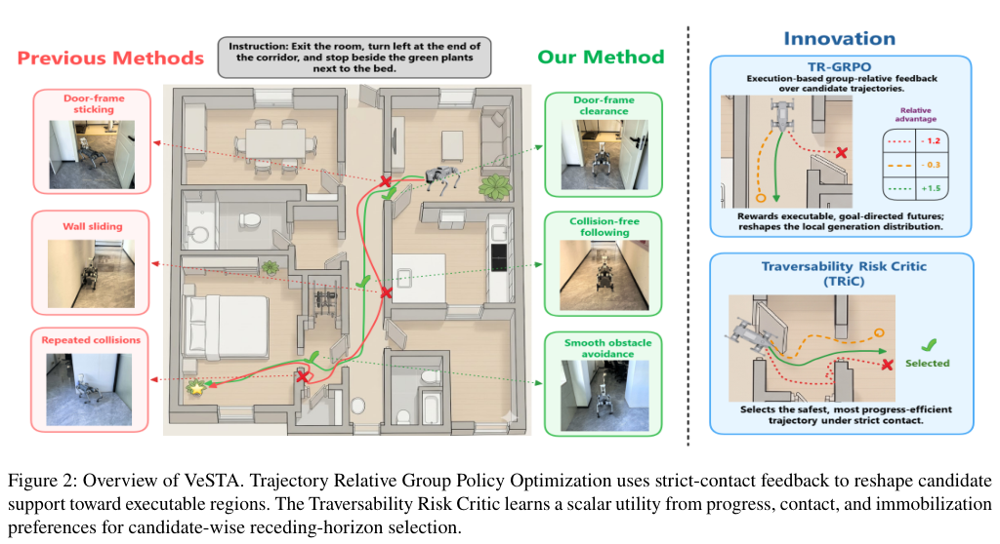
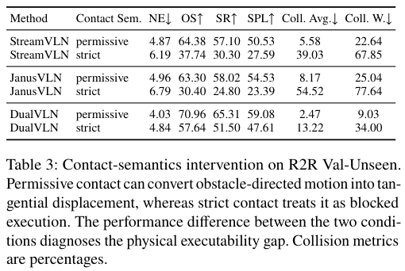
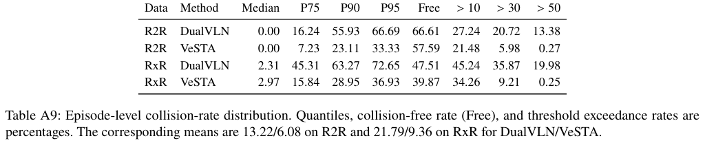

STAGE 1 / 拓展阅读 · VLN / 2026
VeSTA 到达了目标，不等于动作真的可执行。
Revealing and Bridging the Physical Executability Gap in Vision-Language Navigation
Gang He · Zhile Cheng · Kepeng Xu · Zhenyang Liu · Yu-Wing Tai
原始记录 · 17页PDF · 同版本HTML
材料覆盖： 已读17页全文，含正文、References、A1–A17；实际查看Figures 1–6、Tables 1–4和A1–A11。仅按本文还原十二项初读；不读代码反推、不加入第三方结论、不宣称实验复现。PDF页码均为文件页序。
必要摘录与离线范围： 来源采用 arXiv non-exclusive distribution 许可，并非公众CC转载授权。本页仅选取直接用于逐图评论的Figure 2、Table 3、Table A9局部，保留作者、图号、原图注、页码与来源；不上传整篇PDF、整页或完整图集，不声称另获授权。正文及三张本地PNG可离线阅读，HTML与images文件夹须一起保存；原文链接需联网。该说明不把教育目的等同自动授权。
分类：out-of-field · 拓展阅读 · VLN。 本文研究RGB-only指令导航和接触执行，而非恶劣天气LiDAR感知抗扰的直接实验；按本次拓展阅读范围收录。分类为阅读库编目说明，不是作者结论。
作者表述 概括 直接观察 论文未明确说明
01 论文一句话在做什么概括 作者针对连续视觉语言导航（VLN）中“到达目标不等于动作真正可执行”的落差，提出 Visual-Semantic Traversability Alignment（VeSTA）：以严格接触反馈调整局部轨迹生成，再对候选轨迹作风险相关效用排序，减少持续碰撞而尽量保留指令完成能力。Abstract；Sec. 1 · PDF p. 1 ↗
03 Existing Methods & Gap作者表述 以下仅整理本文作者对已有工作的定位，不代表独立复核被引论文。
已有做法 作者指出的限制 原因及当前影响 连续 VLN 的地图、记忆、VLM、数据扩增和语言规划 改善语义/记忆或局部提案，但本文仍追问动作失去接触修正后能否执行。 宽松接触会把障碍导向动作转为切向进展，目标指标不区分这部分环境纠正。Secs. 1–2 · PDF p. 2 ↗ 多模态未来预测、生成式局部导航 保留不同候选并不等于知道应执行哪一个；不兼容模式的平均可能不属于任何候选。 Fig. 1 是概念示意，作者特意说明并非所有基线都采用字面上的均值融合。Fig. 1；Sec. 3.3 · PDF p. 1 ↗ 碰撞规避控制器、额外测距与安全模块 一些系统依赖额外 range sensing 或外部纠正，本文采用 RGB-only 的范围不同。 作者未据此声称本文优于全部安全方法；不能把传感器差异改写成既有方法普遍失败。Sec. 2 · PDF p. 3 ↗ DualVLN / 层级强化学习 本文固定高层 S2，关注低层候选支持与选择。 此设置用于避免把局部接触改进归于更强语言规划器；不是声称消除所有高层错误。Secs. 2–3.1 · PDF p. 3 ↗
概括 统一 gap： 指令语义上合适的运动意图，未必能在不依赖模拟器接触修正时真正实现；需要把候选生成中的可执行支持与候选选择中的效用判断分开处理。Sec. 1 · PDF p. 1 ↗
04 Core Observation / InsightFig. 1 为作者概念图，不是候选碰撞率的统计实验；后续 Fig. 5–6 同样只提供定性例子，不能单独证明全体候选的机制。
05 Method：只看宏观逻辑输入与固定规划： RGB 观测、指令条件子目标进入局部策略；S2 保持不变，隔离局部执行改进。训练生成器 TR-GRPO： 在相同恢复状态下探测候选，用进度、碰撞与卡住等反馈形成相对偏好；以局部高斯替代分布提供可微更新接口。它回应“候选中缺少可执行未来”。训练 TRiC： 冻结生成器与 S2，用严格接触偏好学习候选级标量效用；不是把各条轨迹坐标平均。它回应“已有多个未来但该选哪个”。部署输出： 选择最高效用候选，执行前缀再规划；不读取训练时的模拟器状态、depth 或 LiDAR。概括 核心变化发生在 DualVLN 的局部候选分布及候选选择接口，而非替换高层语言规划。上述为宏观流程概括。Secs. 3.1–3.3；Algorithms 1–2 · PDF p. 4 ↗ A2.1 · PDF p. 11 ↗

Gang He、Zhile Cheng、Kepeng Xu、Zhenyang Liu、Yu-Wing Tai · Figure 2 · PDF p. 2 · 论文局部裁剪，保留原图注。VeSTA 的问题场景与生成/选择两部分总览。 同版本原始来源 · 原尺寸图片 06 Contributions概括 按 Introduction 的四项顺序；括号类别为整理者概括。Sec. 1 contributions · PDF p. 2 ↗
接触语义敏感性诊断 （Modeling / Insight）：显露物理可执行落差，对应语义与执行区分 。定义 visual-semantic traversability （Modeling / Insight）：用候选生成与多模态选择的互补对齐连接两层能力。VeSTA （Method）：组合 TR-GRPO 与 TRiC，对应局部生成/选择流程 。严格接触、消融与机器人实验 （Experiment）：作者报告较低碰撞负担且总体目标指标未下降，对应下节结果；更细边界由附录限定。07 Experiments结果 1｜接触规则会改变导航结论 对应主张 目标成功不能自动代表物理执行。 实验类型 / 实验 受控环境干预：固定策略及episode，比较宽松与严格接触。 结果 · 直接观察 StreamVLN SR 57.10%→30.30%；JanusVLN 58.02%→24.80%；DualVLN 65.31%→51.50%。 作者据此得出的结论 测量的是系统对接触假设的敏感性，不是证明所有宽松条件成功都虚假，也不是隔离单次碰撞因果效应。 来源 Sec. 4.4, Table 3 · PDF p. 6 ↗ 
Gang He、Zhile Cheng、Kepeng Xu、Zhenyang Liu、Yu-Wing Tai · Table 3 · PDF p. 6 · 论文局部裁剪，保留原图注。R2R Val-Unseen 中同一策略的宽松/严格接触配对结果。 同版本原始来源 · 原尺寸图片 结果 2｜主要收益是碰撞负担下降 对应主张 严格接触下减少碰撞，并保留总体目标表现。 实验类型 / 实验 整体对比：VeSTA 对匹配的 DualVLN；R2R与RxR。 结果 · 直接观察 R2R CollW 34.00%→12.73%，SR 51.50%→53.56%；RxR CollW 39.17%→15.53%，SR 41.54%→42.41%。A1中R2R ΔCollW=-21.27个百分点，95%CI [-23.12,-19.42]；ΔSR=+2.07，CI [-0.11,4.19]。 作者据此得出的结论 碰撞降低比小幅成功率提高更有支撑；SR/SPL大多数区间跨零。正文四舍五入后的SR差为2.06点，附录从日志报告2.07点，不把两种精度混为新结果。 来源 Tables 1–2 · PDF p. 5 ↗ A3–A4, Tables A1–A2 · PDF p. 12 ↗ 结果 3｜选择模块的组件效果更大 对应主张 生成和选择在结果上互补。 实验类型 / 实验 组件消融：在严格接触DualVLN上分别加TR-GRPO、TRiC，再组合。 结果 · 直接观察 CollW：34.00%（基线）、29.71%（TR-GRPO）、14.31%（TRiC）、12.73%（完整）。TR-GRPO单独的SR为50.84%，低于基线51.50%。 作者据此得出的结论 当前实现中TRiC组件效果更大；不能从消融直接推断候选覆盖增加或选择后悔值降低。A9称互补而非超加和协同，CollW增益交互残差为-2.71点。 来源 Sec. 4.5, Table 4 · PDF p. 6 ↗ A9, Table A6 · PDF p. 14 ↗ 结果 4｜真机仅提供方向性迁移证据 对应主张 严格接触偏好有仿真外适用性。 实验类型 / 实验 机器人对比：每方法每场景20次指令试验；三种室内难度。 结果 · 直接观察 Hallway CFSR 16/20→19/20；Bedroom 11/20→13/20；Room-to-Room 6/20→9/20。合计33/60→41/60，差+13.3点，非配对正态近似95%CI [-3.9,30.6]。 作者据此得出的结论 方向一致但差值区间均跨零；合计忽略场景异质性，仅描述性汇总，不是精确效果估计或全面现实安全证明。 来源 Sec. 4.3, Fig. 4 · PDF p. 5 ↗ A7, Table A5 · PDF p. 14 ↗ 结果 5｜严重碰撞尾部缩短，不是每条轨迹都更安全 对应主张 下降集中在持续/严重碰撞。 实验类型 / 实验 附录分布与分层分析：看碰撞比例尾部，以及按基线风险分层的episode。 结果 · 直接观察 碰撞率>50%的episode比例：R2R 13.38%→0.27%，RxR 19.98%→0.25%；但无碰撞比例分别66.61%→57.59%、47.51%→39.87%。 作者据此得出的结论 作者明确限定：主要将严重持续碰撞转为较低接触执行；基线已安全的episode可能变差，不是均匀改善。 来源 A13–A14, Tables A9–A10 · PDF p. 16 ↗ 
Gang He、Zhile Cheng、Kepeng Xu、Zhenyang Liu、Yu-Wing Tai · Table A9 · PDF p. 16 · 论文局部裁剪，保留原图注。碰撞比例分位数、无碰撞比例与超过阈值的episode占比。 同版本原始来源 · 原尺寸图片 10 论文逻辑链概括 下表为前文关系的概括，不新增机制证明；任务输入输出见第二节 。
挑战与原因 Observation / Insight 贡献与设计 对应证据与结论 已报告边界 宽松接触纠正运动，目标指标混合策略与环境效果 语义意图≠物理执行；切换接触规则作诊断 接触敏感性 Table 3 ：三策略严格条件性能下降系统级敏感性，非单次碰撞因果效应 候选支持与最终选择是不同问题 生成什么、选哪个需要分别处理 TR-GRPO + TRiC Table 4 / A6 ：选择模块效果更大，组合碰撞负担最低未隔离group-relative项；非超加和协同；未直接证实最终候选覆盖 总均值可能遮蔽持续碰撞与异质性 作者在附录强调分布与风险分层 实验贡献 A9–A10 ：严重尾部收缩，Free反降不均匀改善，基线安全层可能变差 仿真效果能否实际执行 严格接触偏好能否迁移是待检验问题 Go2控制实验 Fig. 4 / A5：三个场景CFSR点估计均升 小样本、差值CI跨零、非一般安全保证
11 第一遍阅读结束后，我应该记住的东西问题： 连续VLN的到达成功不一定代表运动可执行。（概括；Sec. 1）Gap： 宽松接触会替策略修正障碍导向动作，掩盖语义与执行差异。（作者表述；Sec. 1、Table 3）Insight： 候选集合的可执行支持与最终候选选择应区分；接触规则是评测条件的一部分。（概括；Sec. 3.1、Conclusion）核心变化： 固定高层S2，在局部生成和选择中引入严格接触偏好。（概括；Secs. 3.2–3.3、A2.1）结论： 作者数据主要支持严重/持续碰撞下降，而非均匀提高无碰撞率或显著提高成功率。（概括；Tables A1–A2、A9–A10）12 暂时不要深入的内容ΔκM诊断与selection regret的定义及适用范围：Sec. 3.1, Eqs. (1)–(4), PDF p. 3。 高斯替代分布、PPO与group-relative项如何相连：Sec. 3.2, Eqs. (5)–(7), Algorithm 1, p. 4；A2、A12。 TRiC效用、listwise目标与执行前缀：Sec. 3.3, Eqs. (8)–(9), Algorithm 2, p. 4。 配对bootstrap、非有限指标处理、历史shard与反事实边界：A3–A8, pp. 11–14。 组件交互、长度/风险分层、排序诊断的统计口径：Tables A6–A11, pp. 14–17。 第一遍阅读到此结束。保留原文主张与结果边界，不自动进入写作精读或代码精读。